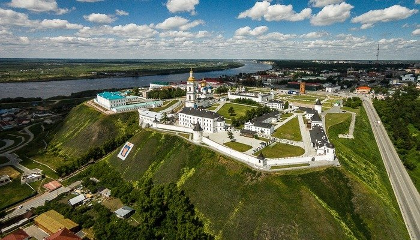

Город Тобольск!
Тобольск — древний город в России, основанный в XVI веке, жемчужина Сибири.
Главная достопримечательность города – это Тобольский кремль, уникальный образец сибирского зодчества.
Расположен на севере Тюменской области, в месте впадения Тобола в Иртыш.
С 1708 года был столицей Сибирской губернии, простиравшейся от Урала до Тихого океана.
Достопримечательности Тобольска. Нажмите сюда.

Тобольский кремль - единственный каменный кремль, построенный в Сибири.

Тобольск - Жемчужина Сибири.


Фото-коллаж Тобольск
История Тобольска:
- Тобольск - крупный город Тюменской области, расположенный в месте слияния рек Тобола и Иртыша, в 198 километрах от Тюмени.
- Первое поселение на месте современного города основано в 1587 году.
- В начале 18 века в Тобольске были построены здания Приказной палаты и Гостиного двора, казенный завод, стекольная мануфактура, салотопенный и свечной заводы. Также в это время в город ссылали военопленных шведских офицеров и солдат.
- В 1810 году была основана первая в Сибири Тобольская мужская гимназия.
- В 1899 году в городе было построено деревянное здание Драматического театра.
- В августе 1917 года в город был сослан император Никалой II и его семья.
- В 1994 году населенный пункт провозглашен одним из основных духовных центров страны.
- В 2013 году в городе было открыто крупнейшее в стране производство полипропилена.
Достопримечательности Тобольска:
- Тобольский кремль - это каменное здание было построено в начале 18 века. Первое деревянное здание кремля было построено в 1594 году. В наши дни в состав кремля входят: Софийско-Успенский собор, башни, стены, колокольня, гостинный двор, архиерические конюшни.
- Софийско-Успенский кафедральный собор - этот древний православный храм был построен в 1686 году. В 2012 году были закончены 8-летние работы по реставрации этого храма.
- Художественный музей - это учреждение культуры было основано в 1888 году. Сейчас музей входит в состав Тобольского государственного музей-заповедника. Рядом с музеем установили скульптуру лошадей.
- Иоанно-Введенский женский монастырь - это религиозное учреждение основано в 1864 году. В советское время в здании монастыря находился интернат, а после воинская часть. В 1998 году монастырь был передан православной церкви.
Благодарю за внимание.
Выполнил Кошелев А.
Аналитика | 6 | 3040 | 21.09.2022.